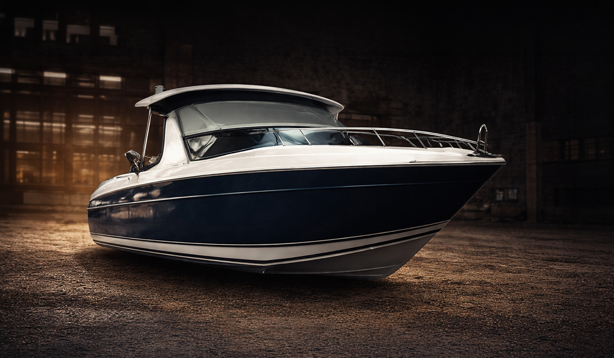

01
Diesel Truck Repair
Repair for diesel pickups, work trucks, and heavier diesel-powered vehicles. If your truck is part of your job, your farm, or your day-to-day life, this is the kind of work the shop is built for.
Learn More
Integrity Diesel Services
Integrity Diesel Truck & Auto Repair handles the kind of mechanical work a lot of shops do not want to touch. From diesel trucks and semis to excavators, dozers, boats, Harleys, crotch rockets, trailers, tractors, and small engine equipment, this is built for real-world repair work in southeast Nebraska.
Service Categories
This page is built to show the full range of equipment, vehicles, and machines Integrity Diesel works on — because this shop covers a lot more than a typical local mechanic.
Repair for diesel pickups, work trucks, and heavier diesel-powered vehicles. If your truck is part of your job, your farm, or your day-to-day life, this is the kind of work the shop is built for.
Learn More
Mechanical repair for semis and bigger diesel units that need dependable attention from a shop used to heavier work.

General mechanical repair for personal vehicles, daily drivers, and the cars families depend on around Weeping Water and nearby towns.
Learn More
Utility trailers, work trailers, hauling trailers, and other tow-behind equipment that needs solid repair and mechanical attention.
Learn More
Tractor repair for property owners, landowners, farms, and anyone depending on equipment that needs to stay running when work has to get done.
Learn More
Excavators, dozers, and other heavy machinery are a big part of what sets this shop apart. This is one of the areas where Integrity Diesel goes beyond what many smaller shops will take on.
Mechanical work for farm-use machines and equipment that need reliable repair close to home in southeast Nebraska.
Learn More
Boats, marine equipment, and even performance-style boats like Bahas. If it has an engine and needs repair, this shop is built to talk about it.
Learn MoreHarleys, crotch rockets, and other motorcycles. Whether it is a weekend bike or something you ride all season, the shop handles more than just cars and trucks.
Learn More
Lawn mowers, snow blowers, and other small engine machines that people around here rely on at home, on acreage, or around the shop.
Learn More
Some jobs do not fit perfectly into one label. If it is mechanical, engine-related, work-related, or equipment-related, it is worth calling and asking about.

That broader service range is exactly what makes Integrity Diesel different. The point of this shop is being able to help with the vehicles and machines other places turn away.
Request ServiceWhat That Looks Like
This is not a one-lane shop. One day it might be a diesel pickup, the next day a trailer, then a mower, a Harley, a semi, a tractor, or an excavator. That range matters because customers around this area need one place they can actually call for all kinds of repair work.
If you are in Weeping Water, Papillion, Bellevue, Gretna, Plattsmouth, Lincoln, Nebraska City, Louisville, or nearby southeast Nebraska communities, this page is here to make one thing clear: Integrity Diesel does a lot more than basic car repair.
Why This Page Matters
People should not have to guess whether you work on their truck, trailer, boat, Harley, mower, or heavy equipment. This page makes it obvious.
A stronger services page helps target the real searches people make around Nebraska when they are looking for repair help on something specific.
This layout gives you room to keep adding stronger individual service pages over time without the site feeling repetitive or thin.
Need Something Fixed?
Service Questions
No. Integrity Diesel works on diesel trucks, semis, cars, trailers, tractors, farm equipment, excavators, dozers, boats, motorcycles, Harleys, crotch rockets, lawn mowers, snow blowers, and many other small engine or mechanical jobs.
Yes. Heavy equipment repair is part of what makes this shop stand out, including work on machines like excavators and dozers.
Yes. That includes motorcycles, Harleys, crotch rockets, boats, and marine-related repair work.
Call the shop and explain what you have. Because Integrity Diesel works on such a wide range of vehicles and equipment, many jobs do not fit neatly into one label.